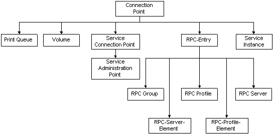

title: Connection Points description: A connection point object contains data about one or more instances of a service available on the network. ms.assetid: eb810e6d-c220-4a24-ae12-b12ace237413 ms.tgt_platform: multiple keywords:
A connection point object contains data about one or more instances of a service available on the network. The connectionPoint object class is the abstract base class from which objects representing connectable resources in Active Directory Domain Services are derived. The following illustration shows some of the object classes derived from the connectionPoint object class.

The following table lists immediate subclasses of the connectionPoint class.
| Object Class | Description |
|---|---|
| serviceConnectionPoint | Service connection point (SCP) objects for publishing data that client applications use to bind to a service. For more information, see Publishing with Service Connection Points (SCPs). |
| rpcEntry | An abstract class whose subclasses are used by the RPC Name Service (Ns) accessed through the RpcNs* functions in the Win32 API. For more information, see Publishing with the RPC Name Service (RpcNs). |
| serviceInstance | Connection point object used by the Windows Sockets Registration and Resolution (RnR) name service, accessed through the Windows Sockets WSA* APIs. For more information, see Publishing with Windows Sockets Registration and Resolution (RnR). |
| printQueue | Connection point object used to publish network printers. For more information, see IADsPrintQueue. |
| volume | Connection point object used to publish file services. |
Â
Be aware that COM-based services do not use connection-point objects to advertise themselves. These services are published in the class store. The Windows 2000 class store is a directory-based repository for all COM-based applications, interfaces, and APIs that provide for application publishing and assigning. For more information, see Publishing COM+ Services.
Â
Â